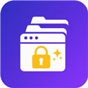
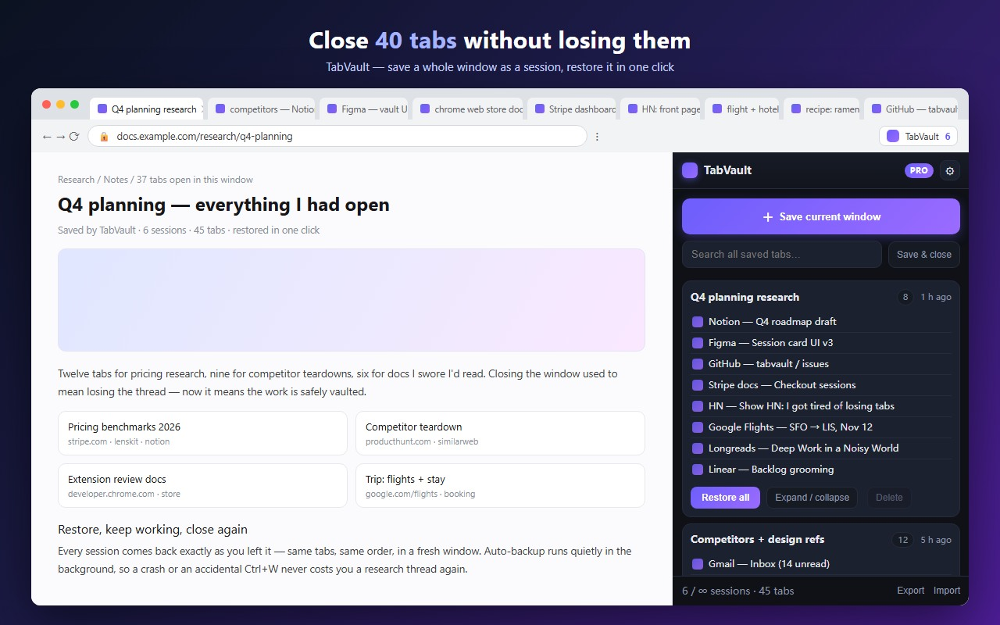
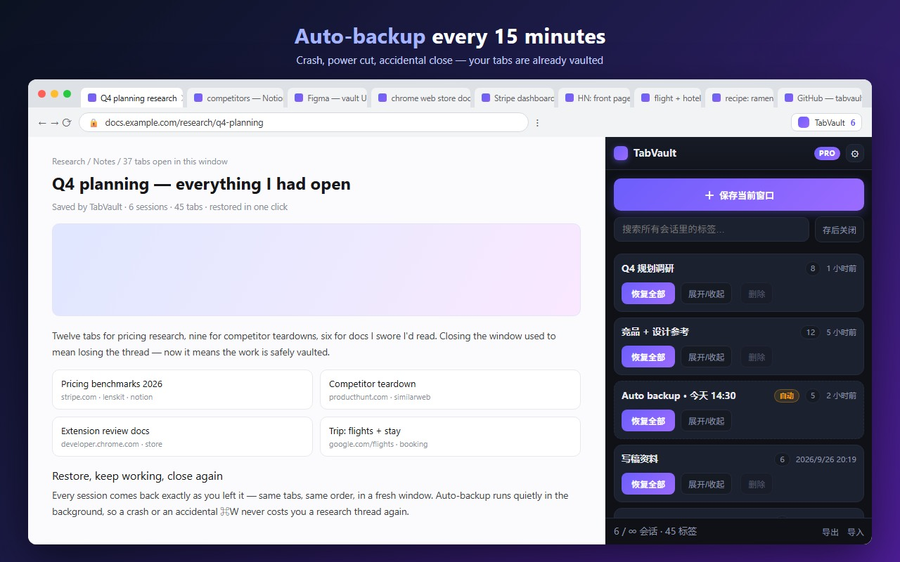

TabVaultTabVault saves every tab in the current window as a named session, so you can clear the desk and get the whole context back in one click — plus a quiet auto-backup that catches your tabs when Chrome dies.
Add to Chrome — free See Pro
Three moves, no account, nothing leaves your browser.
Click the toolbar icon (or Alt+Shift+S). Every http/https tab in that
window becomes one session, named after the sites inside it.
“Save & close” keeps the first tab and releases the rest, so memory drops while the research stays one click away.
Restore reopens the session as a fresh window in the original tab order — it never touches what you already have open.
Turn it on once and forget about it.

With Pro auto-backup enabled, snapshots of normal browser windows are written to local storage. Restore from an available snapshot after an accidental close or restart; changes not yet saved may be missing.
Keep up to 20 automatic snapshots in total across windows. Manual sessions are never removed by automatic backup cleanup.
Nothing is snapshotted until you switch it on in the panel. Local window caching and recovery activate with Pro auto-backup.
Pro is a one-time $6 launch price (regular $9) — a lifetime license activated with a key inside the extension. No subscription, no account.
| Capability | Free | Pro |
|---|---|---|
| Manual sessions | 5 | Unlimited |
| Auto-backup every 15 min | — | ✓ |
| Search across saved tabs | — | ✓ |
| Export / import JSON | — | ✓ |
| Account required | No | No |
| Data stored on a server | None | None |
TabVault has no user database. Sessions live in chrome.storage.local on your machine.
No sign-in, no analytics, no fingerprinting, no ad SDKs. Uninstalling deletes everything.
tabs reads titles and URLs when saving and, if enabled, for local automatic backup and recovery. Browsing history is never read. No <all_urls>, no content scripts.
Checkout happens on Stripe-hosted pages; card data never reaches us. The license key is verified locally. Full policy
Not yet — by design, so nothing is uploaded. Pro users export a JSON file and import it on another machine.
TabVault saves HTTP/HTTPS webpages. Browser-internal pages such as chrome://, file URLs and extension pages are skipped.
Yes — within 14 days, no questions asked. Support & refunds